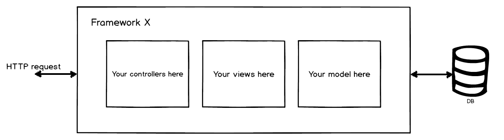
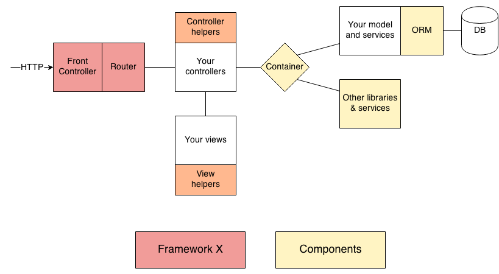
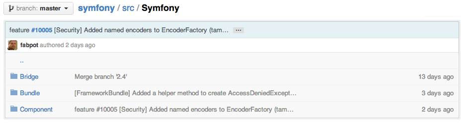

Interopérabilité cross-frameworks
Faire tourner Symfony avec n’importe quel autre framework dans la même application
sfPot Lyon, Janvier 2014
Bonjour
Matthieu Napoli
My C-Sense (myclabs), Lyon
Quelques projets
PHP-DI : Container d'injection de dépendances
Procedure : Symfony avec des contrôleurs procéduraux
MniPagesBundle : Symfony en mode "component-oriented"
…
Interopérabilité cross-frameworks ?
WTF
Migration en douceur d'une application à un framework récent
Une pensée pour ceux toujours coincés sur sf1, ZF1, …

Changement de framework
« on lui avait pourtant dit au CTO que son framework maison c'était pas une bonne idée »
Tirer parti du meilleur des "autres" frameworks
« j'aimerai bien faire un webservice REST avec Apigility mais mon front est sur Symfony »
Composer son application de modules multi-frameworks
« le dev front-end, il pige que dalle à Symfony, on va lui faire développer le front-office avec Silex/Laravel, il nous cassera pas notre back-office… »
Un peu de fun !
Tiens, j'ai bien envie de tester Phalcon moi
Mieux structurer son code
développement framework-agnostic
Vivre pour un idéal meilleur
Les bundles c'est cool, mais pourquoi limiter ça à Symfony ?

Comment ?
Qu'est-ce qu'un framework ?
2005
Qu'est-ce qu'un framework ?
2013
Symfony
25 composants
1 bundle FrameworkBundle